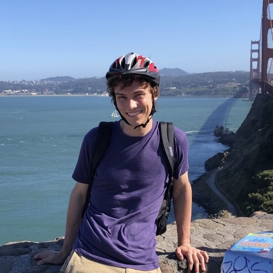

About

I’m currently a physics major with a math minor in college. When I’m not doing research, classes, or tutoring, I enjoy thinking of random questions to answer with one of my projects. If it’s a good question, then I work hard (nowadays writing a lot of code) to try to answer the question.
After graduating high school, I attended Juilliard for a year to study cello. Although I enjoyed music, I realized that my interests were much broader and more academic. I then transferred to Drew University to study physics. Initially I wanted to go into medicine, however I eventually discovered that I loved math, data, and computer science much more. One of my biggest inspirations in this has been my brother. I’m currently learning about statistical and machine learning, which I hope to use in my current research and future projects.
My hobbies include biking and running in nature preserves, playing Catan, and reading articles.